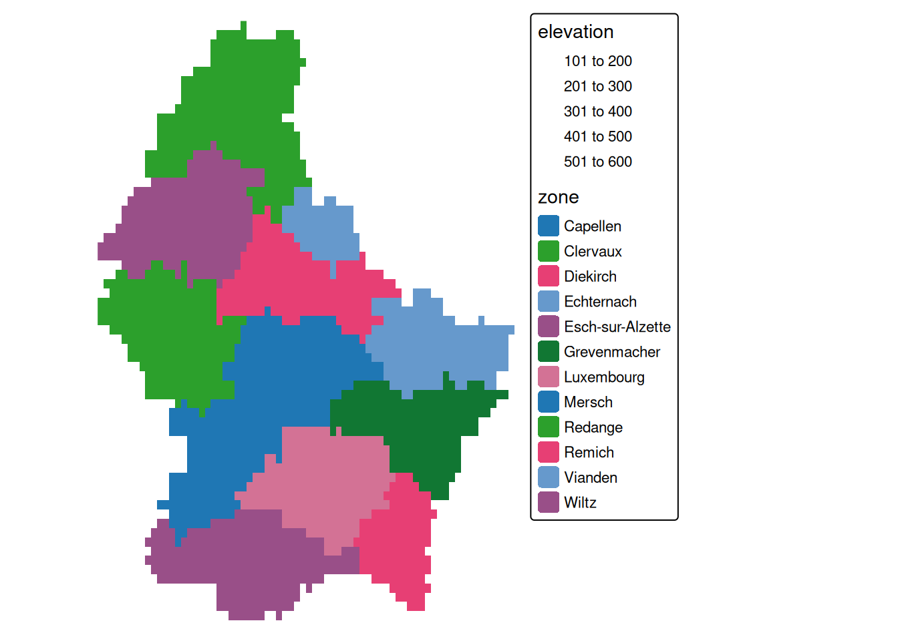

mean_vals <- zonal(r, vect(zones), fun = mean, na.rm = TRUE)
zones$mean <- mean_vals$elevationZonal operations with vector data
- The
zonalfunction in{terra}can handle vector data: however, it requiressfobjects to be converted toterra’s own vector format, calledSpatVector. - The functionvect()can be used to convertsfobjects toSpatVectorobjects:


Extracting raster values at vector points
- A another common operation is to extract raster values at specific points
- Let’s take the example of the city of Luxembourg
- The function
extract()can be used to extract raster values at specific points extractreturns a data.frame with- one column per raster band (1 in our case)
- one row per point (also 1 in our case):

lux_elev <- extract(r, luxembourg_city)
lux_elev ID elevation
1 1 293.9805Vector to raster conversion
- Functions that combine raster and vector data usually convert vector to raster internally
- Sometimes, we might want to do this conversion explicitly. This can be done using the
rasterize()function - This function takes three arguments:
x: The vector data (either of classsforSpatVector)y: A raster object that defines the extent, resolution, and CRS of the resulting raster (i.e. a “template”)field: The name of the column in the vector data that should be used to fill the raster cells
# we can create a template using the input vector. All we have to specify
# is the resolution of the output raster, which is evalutated in the units of
# the CRS of the input vector data (meters in our case).
template <- rast(zones, resolution = 1000)
zones_raster <- rasterize(zones, template, "zone")

Note
Note that rasters don’t store character information. The above zones are coded as integers with a corresponding look-up table (see ?terra::levels).
Raster to vector conversion
- The opposite operation, converting raster data to vector data, can be done using the
{terra}functionsas.points,as.linesandas.polygons: - The resulting object will be of class
SpatVector. This can be converted to thesfclass usingst_as_sf()
zones_poly <- as.polygons(zones_raster) |>
st_as_sf()

🪕 Tasks
- Import
Arealstatistik.gpkgfrom Spatial_Analysis_II using{sf} - To rasterize the data, we need a template raster object. Create a template raster object with a resolution of 100m using the
rast()function - Rasterize the arealstatistik data using the function
rasterize, the tempalte from the previous step, and the columnAS_4as the field to fill the raster cells
- The resulting raster contains the integer values 1 to 4. These values correspond to the following land use categories (see metadata):
- Settlement and urban areas
- Agricultural areas
- Wooded areas
- Unproductive areas
To make the raster more interpretable, assign the corresponding names to the levels of the raster using the levels() function. The levels should be a data.frame with two columns: ID and name (see below)
levs <- data.frame(
ID = 1:4,
name = c(
"Settlement and urban areas",
"Agricultural areas",
"Wooded areas",
"Unproductive areas"
)
)
levels(areal_rast) <- levs
plot(areal_rast)